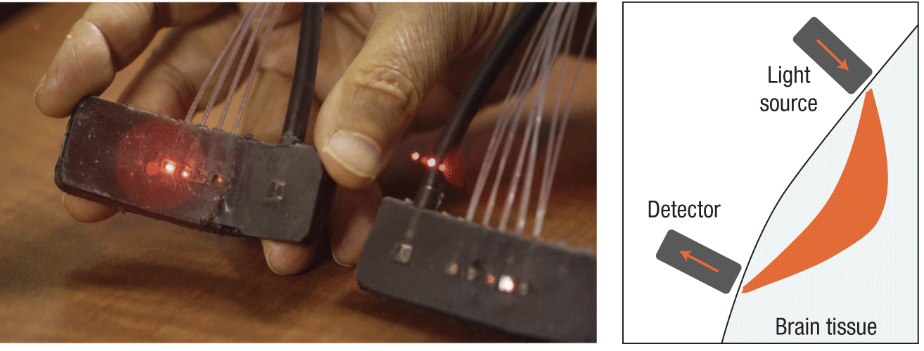
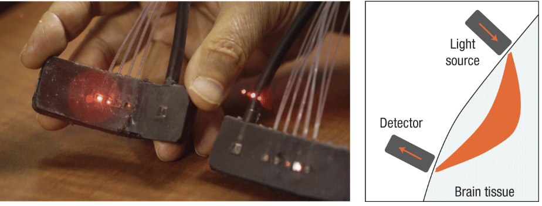

ScratchPad:
Memory Prosthesis Application
JUN 2018 - PRESENT
 

Photo credits: Tufts University/Alonso Nichols and Steffan Hacker
OVERVIEW
We are developing and testing ScratchPad using brain-sensing to assistant memory work.
MY ACTIVITIES
• Literature Research
• Experimental Design
• Brain Computer Interface Design
CONTEXT
Research Project
HCI Lab, Tufts University
Advisor: Robert Jacob, Collaborator: Matthew Russel
RESEARCH QUESTION
How can we facilitate information retrieval task by using real-time brain sensing?